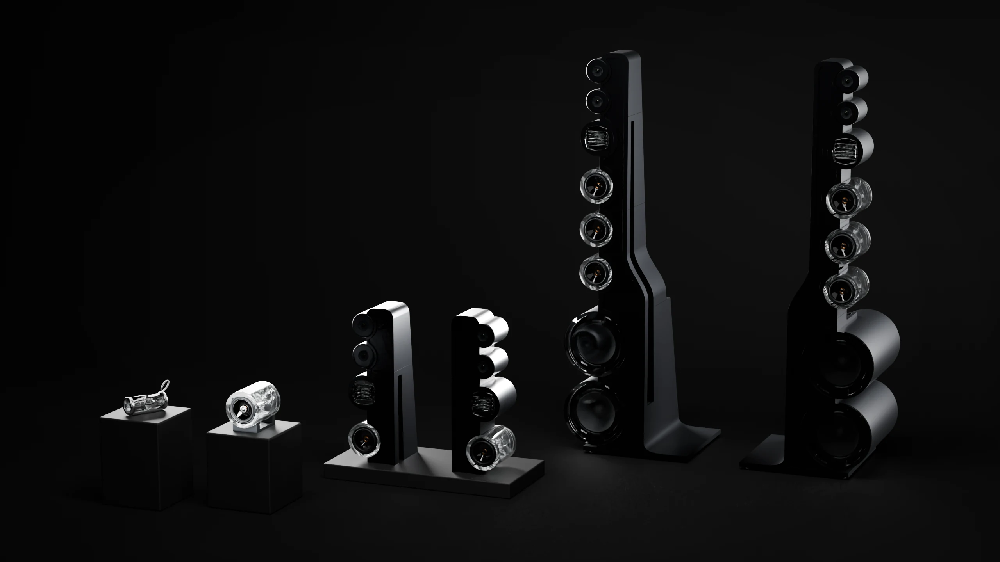
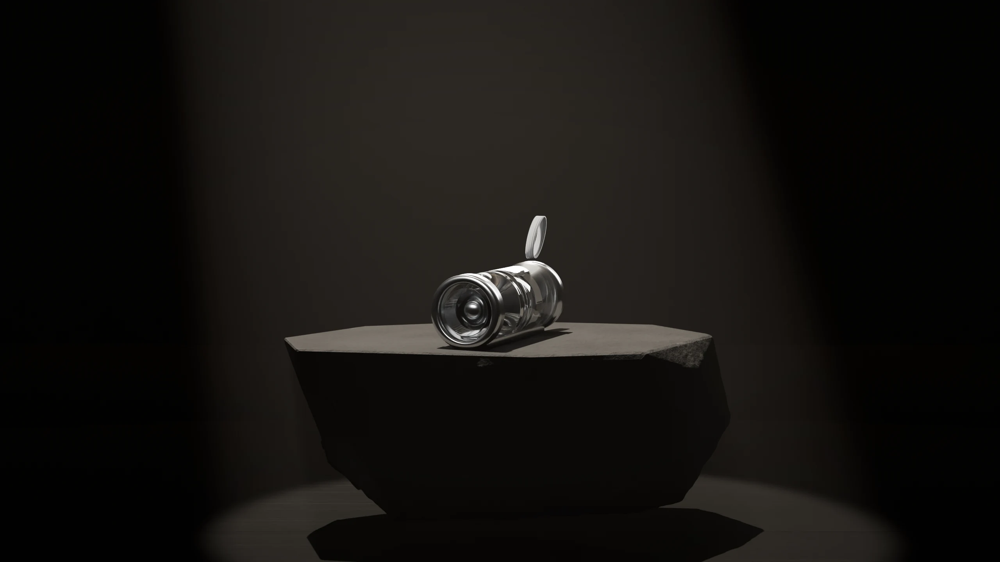

TRANSPARENT GLASS DIAPHRAGM
讓聲音
第一次被看見.
01 / THE IDEA
玻璃振膜＋透明箱體，
讓聲音第一次被看見。
中音模組側視：前方是透明振膜的直接輻射，後方背波沿螺旋葉片走完導音管，從尾端出氣口離開。粒子路徑取自 261027 模型的螺旋流道幾何；動畫為示意，非模擬結果。
02 / EXPLODED
八個單體，一個可換的主體。
- CHASSIS帶卡榫的承載主體 · 唯一可變件
- TWEETER ×2小圓高音模組 · 原箱體
- HIGH方形面單體 · 原箱體
- TRANSPARENT MID ×3玻音先創透明振膜 · 螺旋腔
- WOOFER ×2低音模組 · 原箱體
03 / ONE PAIR · FOUR PRODUCTS
一座塔，拆成四個產品.
由小到大：從一顆透明模組的隨身音響，到整組可訂製的高訂。02 起內建 Wi-Fi 與 AI。

隨身
螺旋全透明聲學腔，一手帶走。
- 取自整塔
- 透明中音模組的振膜與螺旋腔
- 連線
- Bluetooth
- 狀態
- 概念階段

01 · IN SPACE04 / HOME AI
Now it listens.
02—04 內建 Wi-Fi 晶片，開啟 AI。
對它說話試試看
按下麥克風，光會跟著你的聲音呼吸。
05 / PARTNERSHIP
Build it together.
玻音先創
單體技術與製造：透明玻璃振膜、單體參數、良率與供應。
Rytho
軟體技術：AI 聆聽、App 與 Wi-Fi 連網體驗。
OPQ Studio
產品設計：透明結構、卡榫主體、樣機與視覺敘事。
玩樂生活
聲學技術：DSP 調校、分頻與量測。
- 01
單體與視覺樣機
確認透明振膜單體資料
- 02
家用 AI 樣機
02／03 比較、Wi-Fi 與 AI 整合
- 03
隨身可行性
電池、體積、耐用與成本
- 04
高訂主體系列
主體與顏色訂製流程
06 / FAQ
常見問題.
RYTHO HYPE 是什麼？
RYTHO HYPE 是一套透明喇叭產品概念：以玻音先創的透明玻璃振膜為核心，搭配透明箱體與螺旋葉片內構，讓發聲的結構被看見。由 OPQ Studio 設計，Rytho、玻音先創、玩樂生活共同開發。
RYTHO HYPE 有哪幾個產品？
一對完整的塔型喇叭可以拆成四個產品：01 隨身（Bluetooth，高 180 mm）、02 單顆＋底座（Wi‑Fi／AI，高 261 mm）、03 上半段兩節（Wi‑Fi／AI，高 1,022 mm，一對）、04 整組高訂（Wi‑Fi／AI，高 2,693 mm，一對）。
透明振膜和螺旋葉片在結構上扮演什麼角色？
中音模組正面是玻音先創的透明玻璃振膜；箱體內的螺旋葉片同時是導音管，背波沿螺旋流道前進，從尾端出氣口離開。網站上的粒子動畫取自 261027 模型的流道幾何，屬示意，不是模擬或量測結果。
04 整組高訂可以訂製什麼？
八個單體與箱體維持不變，只更換承載它們的主體。目前提供 Original、Fin（七種表面）與 Hi‑Fi（70s 錄音室監聽、英式傳統監聽、北歐雕塑）三種主體方向，皆待 CAD。
各合作方負責什麼？
玻音先創負責單體技術與製造（透明玻璃振膜）；Rytho 負責軟體技術（AI 聆聽、App、Wi‑Fi 連網）；OPQ Studio 負責產品設計；玩樂生活負責 DSP 聲學技術（調校、分頻與量測）。
RYTHO HYPE 現在可以購買嗎？
還不行。RYTHO HYPE 目前在概念與樣機階段，下一步是單體與視覺樣機、家用 AI 樣機、隨身可行性評估，以及高訂主體系列。
In English.
RYTHO HYPE is a transparent loudspeaker concept. Its core is a transparent glass diaphragm made by 玻音先創, set in a clear enclosure with a spiral vane inside, so the structure that makes the sound stays visible. It is designed by OPQ Studio and developed with Rytho (software) and 玩樂生活 (DSP). It is at concept and prototype stage and is not for sale.
What is RYTHO HYPE?
RYTHO HYPE is a transparent loudspeaker concept built around a transparent glass diaphragm from 玻音先創, a clear enclosure and an internal spiral vane. OPQ Studio leads the design; Rytho, 玻音先創 and 玩樂生活 co-develop it.
Which products are in the RYTHO HYPE family?
One pair of tower speakers splits into four products: 01 Portable (Bluetooth, 180 mm tall), 02 Home AI Single with base (Wi‑Fi and AI, 261 mm), 03 Home AI Upper Two (Wi‑Fi and AI, 1,022 mm, a pair) and 04 Bespoke Full Set (Wi‑Fi and AI, 2,693 mm, a pair).
What do the glass diaphragm and the spiral vane do?
The mid-range module radiates through the transparent glass diaphragm at the front. Inside the enclosure the spiral vane doubles as the port: the rear wave follows the spiral channel and leaves through the outlet at the tail. The particle animation on this site is traced from the channel geometry of the 261027 model; it is an illustration, not a simulation or measurement.
What can be customised on the 04 Bespoke set?
The eight drivers and their enclosures stay the same; only the body that carries them changes. Current body directions are Original, Fin (seven finishes) and Hi‑Fi (70s studio monitor, British heritage monitor, Scandinavian sculpture), all pending CAD.
Who does what?
玻音先創: driver technology and manufacturing (transparent glass diaphragm). Rytho: software (AI listening, app, Wi‑Fi). OPQ Studio: product design. 玩樂生活: DSP acoustics (tuning, crossover and measurement).
Can I buy RYTHO HYPE?
Not yet. RYTHO HYPE is at concept and prototype stage. Next steps are driver and visual prototypes, a home AI prototype, a portable feasibility study and the bespoke body series.